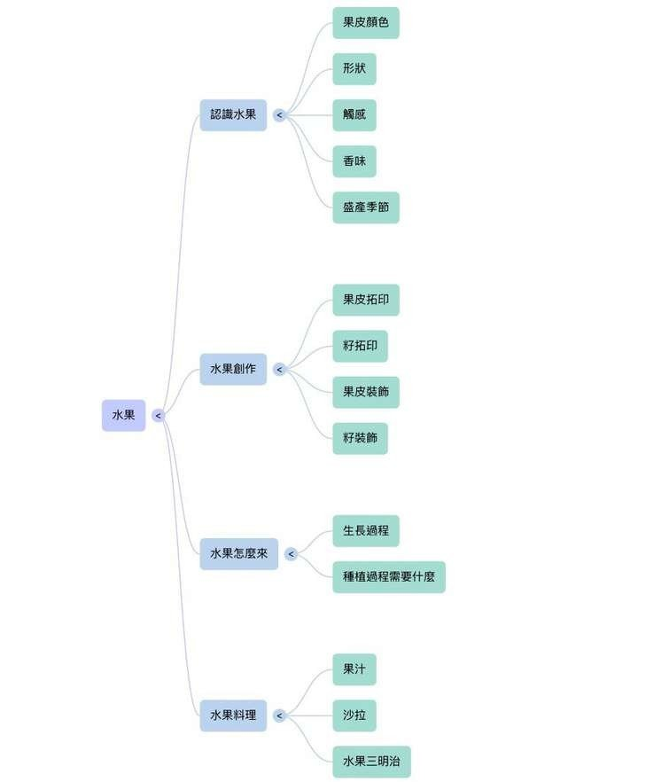
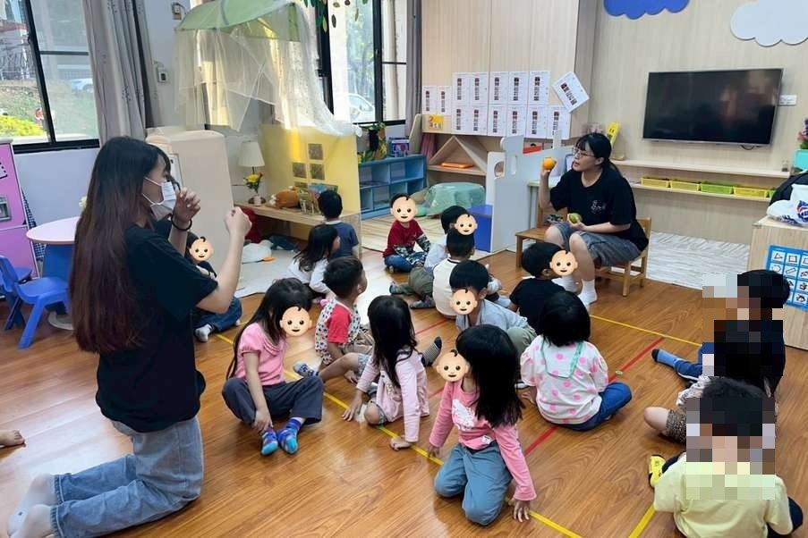
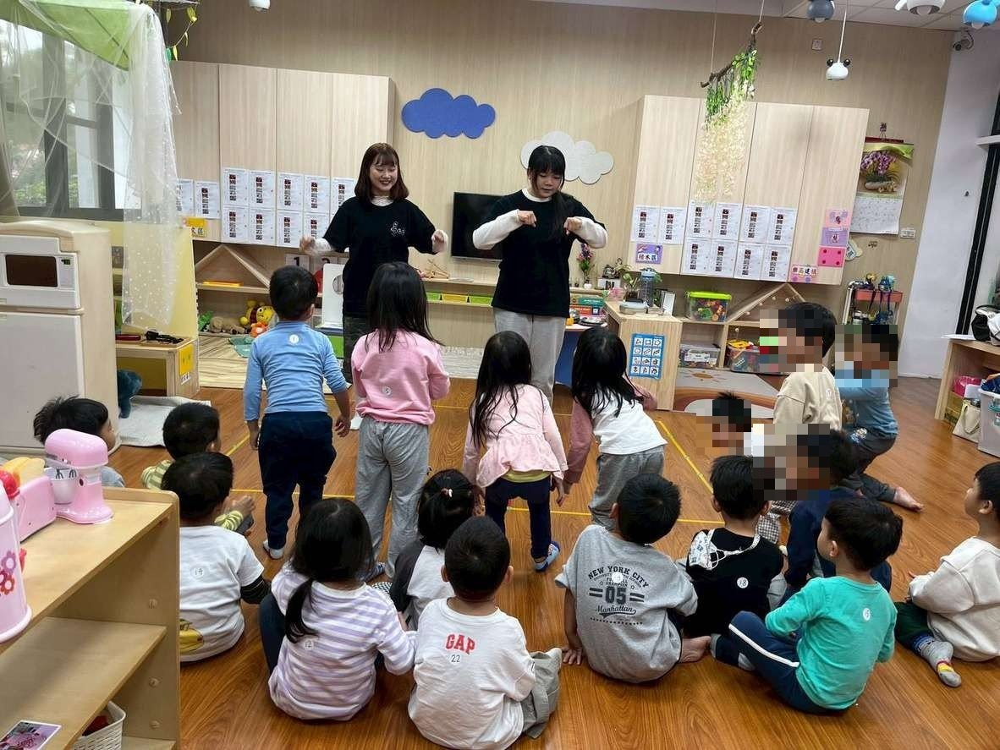
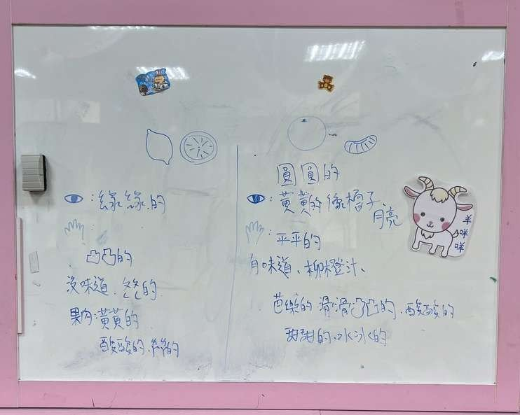
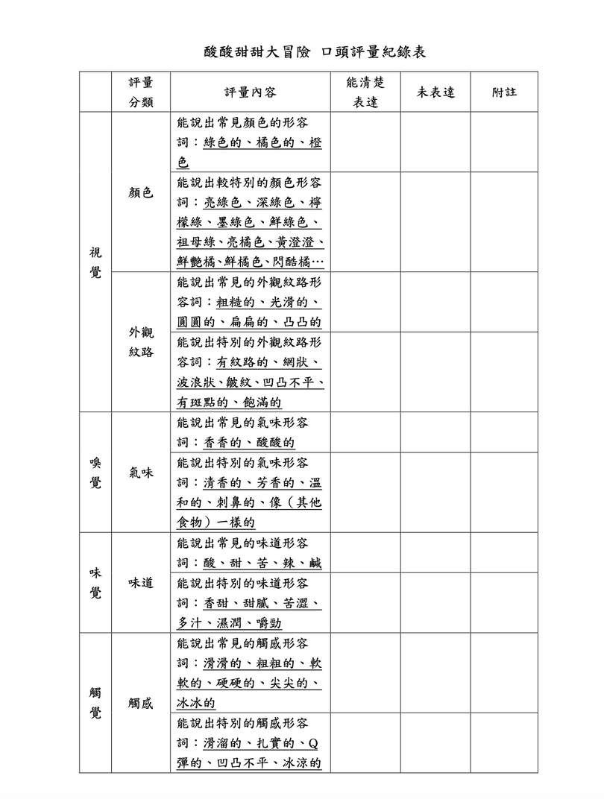
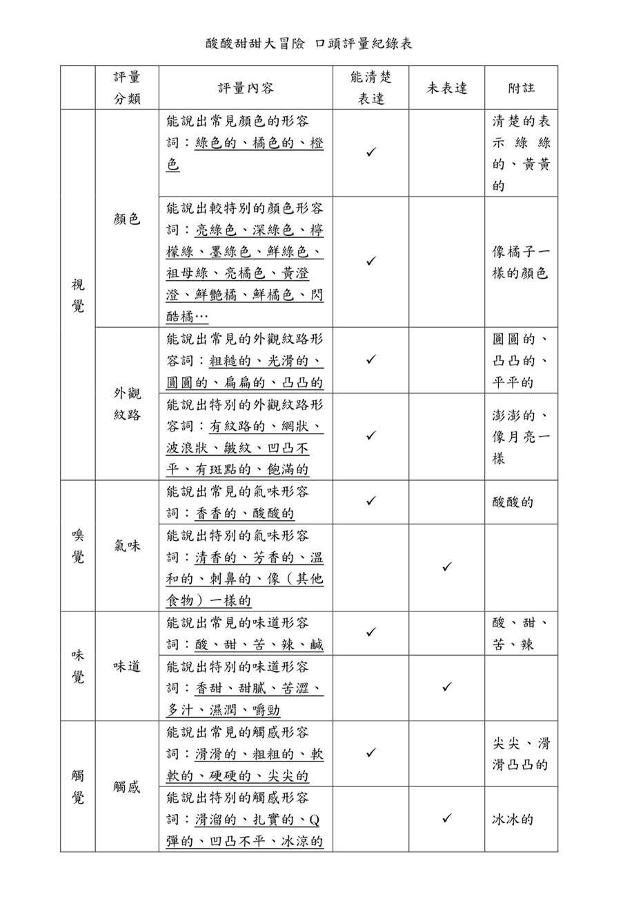
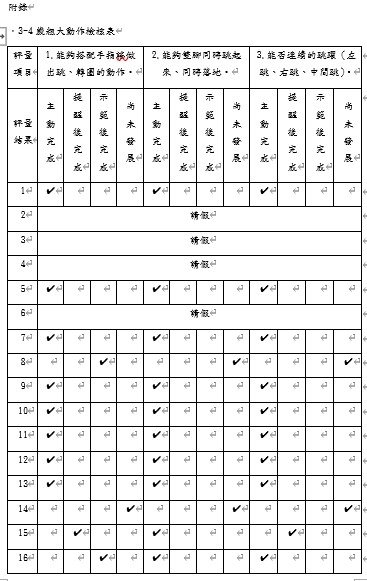

課程目標與學習指標
認-2-2 整理自然現象訊息間的關係（認-小-2-2-2）；身-3-1 應用組合及變化各種動作，享受肢體遊戲的樂趣（身-小-3-1-1）
活動怎麼進行
第一次試教｜酸酸甜甜大冒險
自編手指謠開場，幼兒輪流用眼看、手摸、鼻聞、口嚐比較檸檬與橘子——外皮什麼顏色？摸起來什麼感覺？聞起來、吃起來像什麼？最後上台分享觀察。
第二次試教｜檸檬酸酸跳，橘子甜甜轉
把「檸檬酸」變成跳、「橘子甜」變成轉圈，配上自編手指謠分組演出，並鼓勵幼兒改編出自己的動作。
評量怎麼設計
- 工具一：自編「口頭評量紀錄表」——按視／嗅／味／觸四感分類，每類再分「常見形容詞」與「特別形容詞」兩層，勾選「能清楚表達／未表達」，附註欄記錄幼兒原話。
- 工具二：自編「3–4歲粗大動作評定量表」（參考 3–4 歲兒童發展指標）——三大檢核項（搭配手指謠做出動作／雙腳同時跳起落地／連續跳躍），每項以「主動完成／提示後完成／示範後完成／尚未發展」四級評定。
- 實施技巧：幼兒背後貼座號貼紙，四位施測者分工、每人負責記錄六位幼兒。
評量看見了什麼
- 視覺與觸覺詞彙最豐富：幼兒能說出「綠綠的」「滑滑凸凸的」，甚至用「像月亮一樣」比喻紋路。
- 頻繁使用疊字是 3–4 歲語言發展的典型特徵；「清香」「多汁」等精確描述詞彙尚未出現——評量結果直接指出語言鷹架的下一步。
- 動作評量顯示多數幼兒能自主變化肢體動作；少數需示範後才嘗試、動作單一。
教學現場的即時調整
- 原設計的小組活動因教室空間限制，現場改為團體活動。
- 初版教案經討論調整：把「滾」改為「轉圈」避免碰撞；發現「畫出動作歷程」對小班太難而移除；改用自編手指謠取代播放音樂，讓幼兒能改編動作。
這組的反思
- 部分幼兒需要教師引導才能表達感受，描述多停留在單一感官——可加強對比式提問（「檸檬跟橘子摸起來哪裡不一樣？」）。
- 提供語言鷹架：示範形容詞、搭配表情圖卡與感官圖卡。
給現場老師的啟示
同一個主題，認知目標用「口頭評量紀錄」、動作目標用「評定量表」——工具跟著目標走。把幼兒的原話記進附註欄，一張表就同時是評量證據和語言發展的第一手語料。
現場紀實







